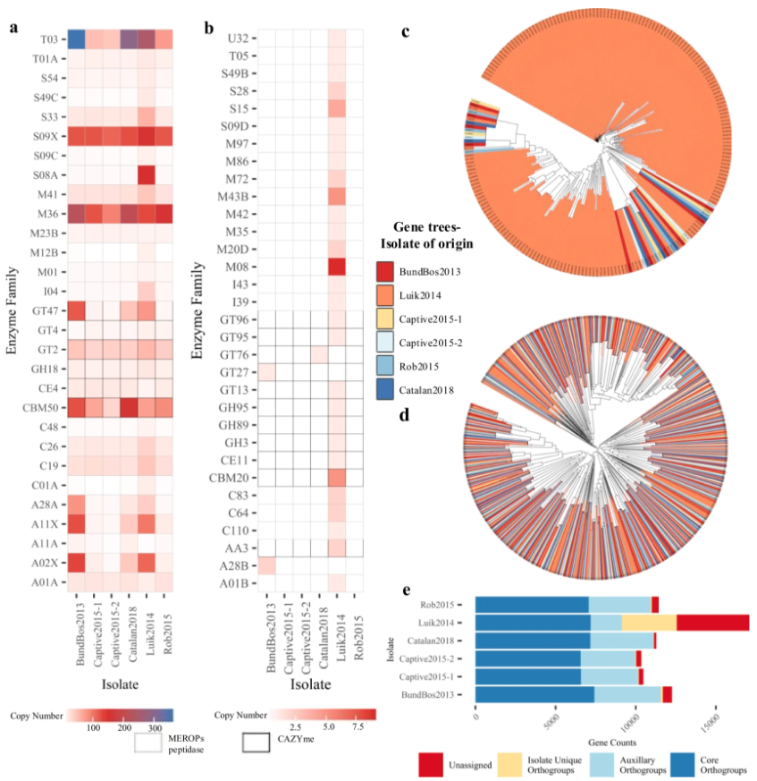
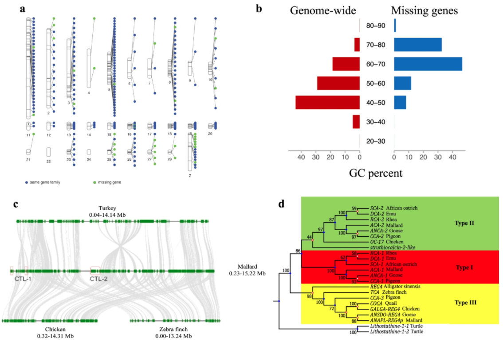
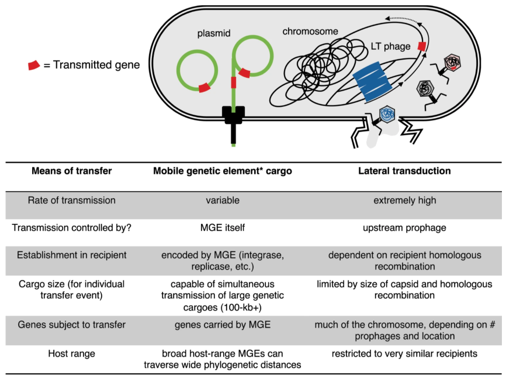
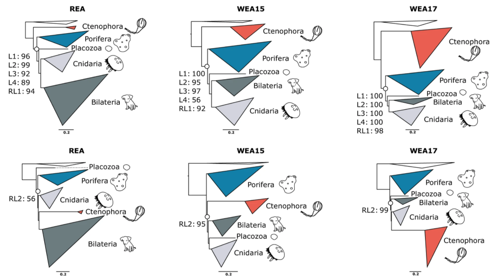
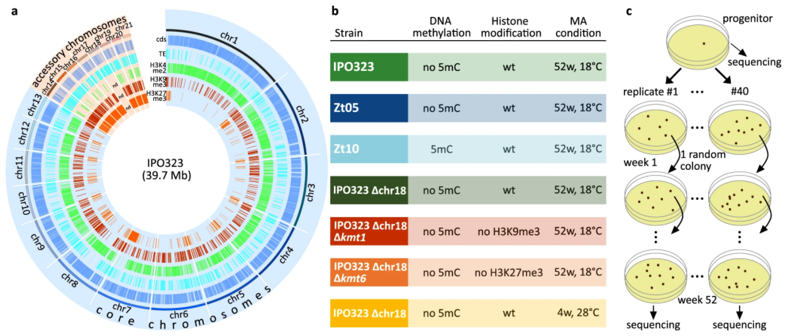
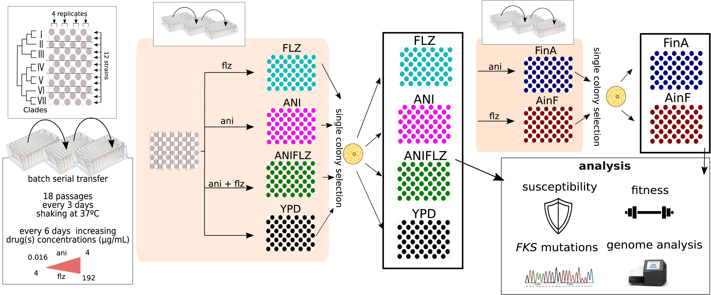

Evo GoodReads
Population insights into the European Batrachochytrium salamandrivorans epidemic

Fungi pose a serious threat to global biodiversity. The lack of fungal genomes impedes
our ability to characterize epidemics and develop strategies to stop them. To address this,
researchers sequenced nine isolates of Batrachochytrium salamandrivorans that were associated
with fire salamander die-offs that also span the geographic and temporal range of the outbreak.
Molecular evolution analyses reveal lineage-specific
gene family acquisitions, losses, and expansions. Analyses also revealed horizontal
gene transfer events that occurred after the divergence of major lineages. Together, these analyses
reveal a multitude of evolutionary mechanisms contribute to genome diversity among B. salamandrivorans
isolates. Examination of
gene content and functions therein suggests B. salamandrivorans has a saprotrophic
lifestyle, which was previously not observed. This finding suggests that a natural reservoir
of pathogens can continually infect fire salamanders even after population decline, which can
lead to extinction. These findings shed light on pathogen success and provide key insights
to inform the design of mitigation strategies.
Kelly, M., Pasmans, F., Muñoz, J. F., Shea, T. P., Carranza, S., Cuomo, C. A., et al. (2021).
Diversity, multifaceted evolution,
and facultative saprotrophism in the European Batrachochytrium salamandrivorans epidemic.
Nat. Commun. doi:10.1038/s41467-021-27005-0.
Comparative genomics of wild and domestic ducks provides insight into avian domestication

Ducks are a source of food (i.e., meat and eggs) and feather down. Similar to other
domesticated organisms, human intervention has imposed a strong selective pressure
on ducks used for human affairs resulting in diversity of body size, plumage, and
reproduction and the rise of two major breeds: one used for egg laying (the Shaoxing
breed) and another used for meat consumption (the Pekin breed). Researchers generated
high-quality genome assemblies for the Mallard, Pekin, and Shaoxing ducks to illuminate
the genetic underpinnings of duck domestication. Over 35 million variants such as single
nucleotide polymorphisms, insertions and deletions, and large structural variants were
identified among wild and domesticated ducks. Comparative transcriptomics revealed
differential gene expression among several genes including NR2F2, which is
involved in adipocyte differentiation in mice. After introducing mutations in
NR2F2 in an immortalized chicken preadipocyte cell line revealed variation in
mRNA expression lovels and adipogenic potential. These results implicate NR2F2
in adipocyte variation between wild and domestic ducks, but further analysis is required.
Taken together, this study uncovers several mutations associated with duck domestication
and identifies candidate genes that may be associated with phenotypic differences among
wild and domestic ducks.
Zhu, F., Yin, Z.-T., Wang, Z., Smith, J., Zhang, F., Martin, F., et al. (2021).
Three chromosome-level duck genome
assemblies provide insights into genomic variation during domestication.
Nat. Commun. doi:10.1038/s41467-021-26272-1.
Are bacterial chromosomes mobile genetic elements?

Genome sequencing of bacteria has revealed that horizontal gene transfer—wherein individuals
acquire genes from non-vertical processes such as phage-related bioprocesses—occurs frequently.
Horizontally acquired genes can have functional consequences related to organismal ecology. These processes
suggest that the bacterial tree of life is more like a network rather than a bifurcating tree.
Furthermore, the rate of horizontal gene transfer among chromosomal genes can exceed
the rate of transfer among genetic elements classified as "mobile genetic elements" such as
plasmids. As a result, these observations call into question whether bacterial chromosomes
should also be considered mobile genetic elements. This question is complicated by asymmetric
rates of horizontal gene transfer across bacterial chromosomes; thus, should genomic islands
in the bacterial chromosome be considered mobile genetic elements or the entire chromosome?
Another question to be posed is whether microbiomes should
be viewed through the lens of taxonomic composition or the functional genetic toolkit available
to the community?Although answers are not readily available, this thought provoking question
can inform diverse studies including organismal ecology and the microbiome.
Hall (2021).
Is the bacterial chromosome a mobile genetic
element?
Nat. Commun. doi:10.1038/s41467-021-26758-y.
Recoding and gene-specific mixture models suggests sponges are the root of the animal tree

Understanding the evolution of animal complexity requires resolved evolutionary relationships among extant taxa.
Sponges, which have a simple body plan, were thought to be sister to all other animals thereby suggesting animal
evolution is marked by a gradual increase in body plan and cell type complexity. This view has been challenged
by phylogenomics, which initially supported comb jellies as sister to all other animals. This observation
suggests secondary loss or independent origins of complex traits. Researchers demonstrate that comb jellies as
sister to all other animals likely stems from model misspecification due to the use of overly simplistic models.
Instead, they utilize site-heterogeneous mixture models, which frequently had better model fit than site-homogeneous
models, and character recoding into a partitioned phylogenomic workflow. This strategy diminished the impact of
long branch attraction artifacts and provided support for sponges as sister to all animals. The efficacy of using
mixture models in partitioned phylogenomics provides a mechanism for future studies to combat analytical artifacts
in phylogenomic analyses.
Text adapted from Nature Communications.
Redmond and McLysaght (2021).
Evidence for sponges as sister to all other
animals from partitioned phylogenomics with mixture models and recoding.
Nat. Commun. doi:10.1038/s41467-021-22074-7.
Epigenetics and environment impact mutation rate in a pathogenic fungus

Mutation rates may vary across the genome and be impacted by selection. Intra-genomic mutation rate variation
may be linked to epigenetic modifications but studies that directly link the two are sparse. Here, researchers
unravel the impact of epigenetic modifications and temperature stress on mutation rates in a fungal pathogen.
Deletion mutants that lack epigenetic modifications reveal that histone mark H3K27me3 increases mutation rates;
in contrast, H3K9me3 decreases the mutation rate. Researchers also reveal two ways that intra-genomic mutation
rate can vary: one, cytosine methylation in transposable elements (TE) increases mutation rate, which results
in significantly less TE mobilization, and, two, accessory chromosomes have a significantly higher mutation rates.
Environmental stressors, namely temperature stress, were found to increase mutation rates. These results reveal
that epigenetic and environmental parameters can significantly impact genome-wide mutation rate thereby impacting
the evolutionary trajectory of a species.
Text adapted from Nature Communications.
Habig, M., Lorrain, C., Feurtey, A., Komluski, J., and Stukenbrock, E. H. (2021).
Epigenetic
modifications affect the rate of spontaneous mutations in a pathogenic fungus.
Nat. Commun. doi:10.1038/s41467-021-26108-y.
Microevolution leads to antifungal drug resistance in a fungal pathogen

Increased resistance to antifungal drugs among fungal pathogens is of growing medical concern.
However, the processes leading to resistance are poorly understood. Researchers used experimental
evolution to study the mutational signatures associated with the evolution of fluconazole and
anidulafungin resistance in the major fungal pathogen Candida glabrata. Resistance to one
or both drugs occurred rapidly and was associated with repeatedly observed mutations in a few genes as
well as a moderate fitness costs. Mutations in ERG3 were associated with
resistance to anidulafungin and cross-resistance to fluconazole. These results shed light
on the evolution of resistance and cross-resistance to
antifungal drugs.
Text adapted from Current Biology.
Ksiezopolska, E., Schikora-Tamarit, M. À., Beyer, R., Nunez-Rodriguez, J. C., Schüller, C., and
Gabaldón, T. (2021).
Narrow mutational
signatures drive acquisition of multidrug resistance in the fungal pathogen Candida glabrata.
Curr. Biol. doi:10.1016/j.cub.2021.09.084.
The evolutionary history of fungi
 Phylogenomic studies have improved our understanding of the tree of life.
Despite the technologic and medical significance of fungi, the evolutionary
relationships among major clades are poorly resolved. To evaluate poorly resolved relationships,
researchers constructed a phylogenomic data matrix of 290 genes from
over 1,600 species, which includes representatives from most major lineages. Researchers
also implemented a rigorous subsampling strategy for identifying incongruence bipartitions.
Analyses of these the full and subsampled data matrices using concatenation- and coalescent-based
approaches yielded a robust phylogeny of the fungal kingdom. Support was observed for several poorly
resolved relationships and episodes of ancient diversification. These results provide a
framework to studying fungal evolution.
Text adapted from Current Biology.
Phylogenomic studies have improved our understanding of the tree of life.
Despite the technologic and medical significance of fungi, the evolutionary
relationships among major clades are poorly resolved. To evaluate poorly resolved relationships,
researchers constructed a phylogenomic data matrix of 290 genes from
over 1,600 species, which includes representatives from most major lineages. Researchers
also implemented a rigorous subsampling strategy for identifying incongruence bipartitions.
Analyses of these the full and subsampled data matrices using concatenation- and coalescent-based
approaches yielded a robust phylogeny of the fungal kingdom. Support was observed for several poorly
resolved relationships and episodes of ancient diversification. These results provide a
framework to studying fungal evolution.
Text adapted from Current Biology.
Li, Y., Steenwyk, J. L., Chang, Y., Wang, Y., James, T. Y., Stajich, J. E., et al. (2021).
A
genome-scale phylogeny of the kingdom Fungi. Curr. Biol.
doi:10.1016/j.cub.2021.01.074.
Insights into the emergence of the mycorrhizal symbiosis

Arbuscular mycorrhizal fungi (AMF) (subphylum Glomeromycotina) form a
symbiotic relationship with over 70% of known land plants.
This symbiosis enables plants to acquire poorly soluble soil nutrients and AMF to
receive photosynthetically fixed carbohydrates. This plant-fungus symbiosis dates back more
than 400 million years and is thought to have contributed to the
colonization of land by plants. Genomic analyses of plant species has begun to unravel
the mechanisms that facilitated the evolution of this symbiosis,
however, how and when the plant-fungus symbiosis emerged in AMF remains unknown and research
into this topic has been stymied by the dearth of genomic data among key AMF fungi.
Geosiphon pyriformis (Archaeosporales) is a basal AMF fungus and the only one known
to produce endosymbiosis with nitrogen-fixing cyanobacteria (Nostoc punctiforme), which is
thought to be the ancestral AMF-state. Thus, G.
pyriformis is ideal to glean insights into the evolutionary origins of AMS and the emergence
of AMF symbiosis. To begin to address these questions by sequencing, researchers sequenced the
genome of G. pyriformis.
Text adapted from Current Biology.
Malar C, M., Krüger, M., Krüger, C., Wang, Y., Stajich, J. E., Keller, J., et al. (2021).
The genome of
Geosiphon pyriformis reveals ancestral traits linked to the emergence of the arbuscular
mycorrhizal symbiosis. Curr. Biol. doi:10.1016/j.cub.2021.01.058.